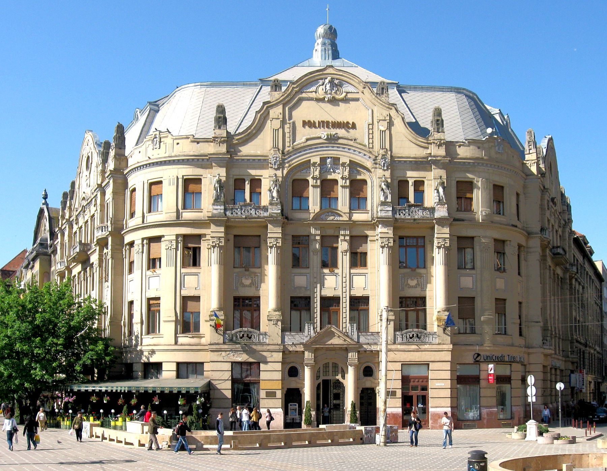

The Victory Square (Romanian: Piața Victoriei), known until 1990 as the Opera Square (Romanian: Piața Operei), is the central square of Timișoara. It is the place where Timișoara was proclaimed on 20 December 1989 the first city free of communism in Romania. It was a main boulevard, transformed into a square after the closure of the southern side by the construction of the Metropolitan Cathedral. The opposite poles of the square consist of the Opera to the north and the Metropolitan Cathedral to the south. From the Opera to the Cathedral the promenade on the right is called Corso, and the one on the left is called Surogat. Both have protected architectural ensembles of local historical importance.
The square hosts the buildings of some important institutions such as the National Theater and Opera, the Orthodox Cathedral, Timiș, Capitol and Studio cinemas, the Museum of Banat, several art galleries as well as many shops and sidewalk cafés. Some of the most important cultural events take place in Victory Square: JazzTM, Timfloralis, FEST-FDR, Opera and Operetta Festival, Easter and Christmas fairs, New Year's concerts, etc.
